Weibo API Guide
Sign up a Weibo Account
The goal of this section is to get a username and password
of weibo account.If you already have, please go to next Section.
At the US areas, the weibo.com will be redirected to the the us.weibo.com. The page is as follows:
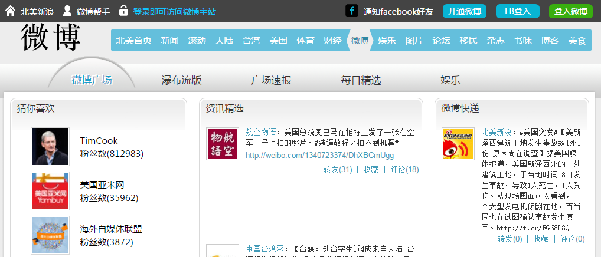
Sign up for Free
Click the 开通微博(Open an Account) button on the top-right menu, and the page could be like this:
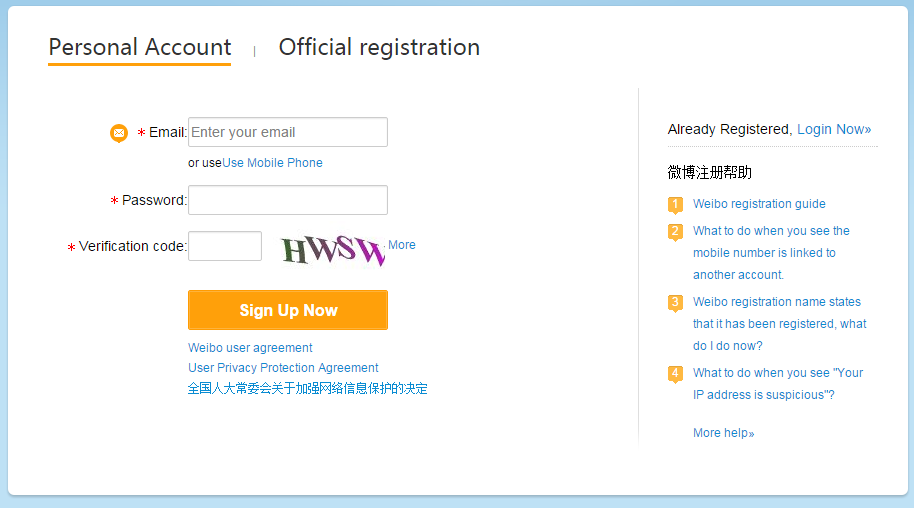
It has two ways to fill the form: Use Email or
Use Mobile Phone , but both of them need your phone to verfy the information.
This guide will follow the Mobile Phone way. The page is showing below:
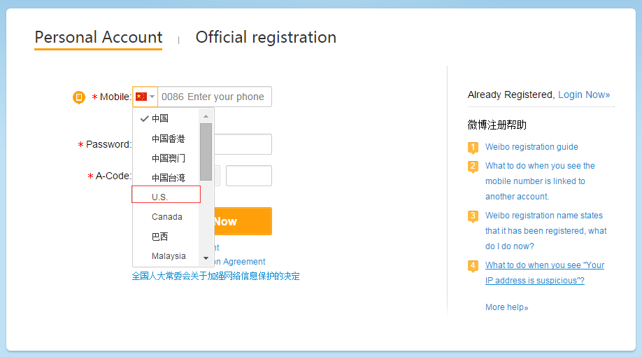
Choose the area code for your phone number, after filling in all the fields,click the
Orange button and go to the next step.
Update Information
In this step, you need to provide your basic information.
For the gender,男 (on the left) means male and
女 (on the right) means female.
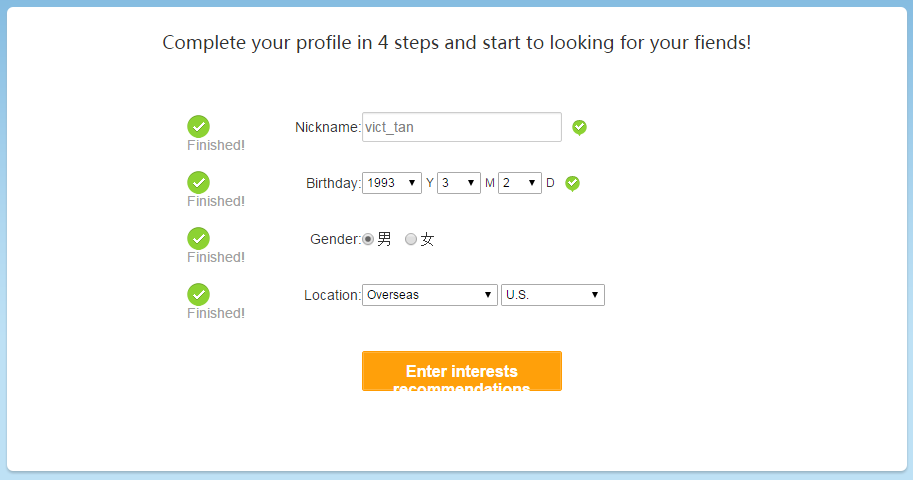
Click the orange button to continue.
Select Interests
Choose at least one of the interests on the pages,click the orange Enter button.
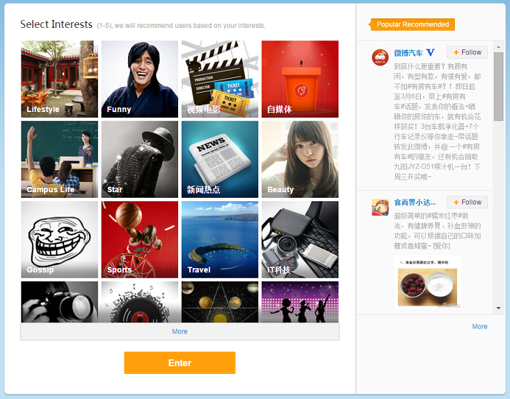
Weibo World
If all the steps above go well, you will now enter the weibo world.
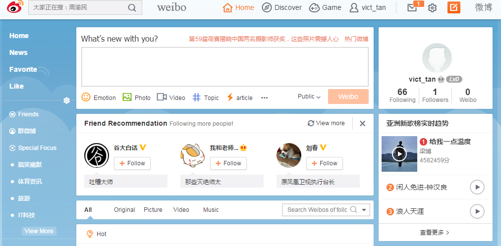
NOTE: If you want to log in next time, just go to weibo.com,
click the 登录微博(Sign in) button and sign in with your phone number.
Set up a Web Application
The goal of this section is to obtain the following three items:
- App Key
- App Secret
- Redirect URI
If you already have all of them, please go to next Section.
Assume you have nothing wrong with the networking,you could see the page as follow:
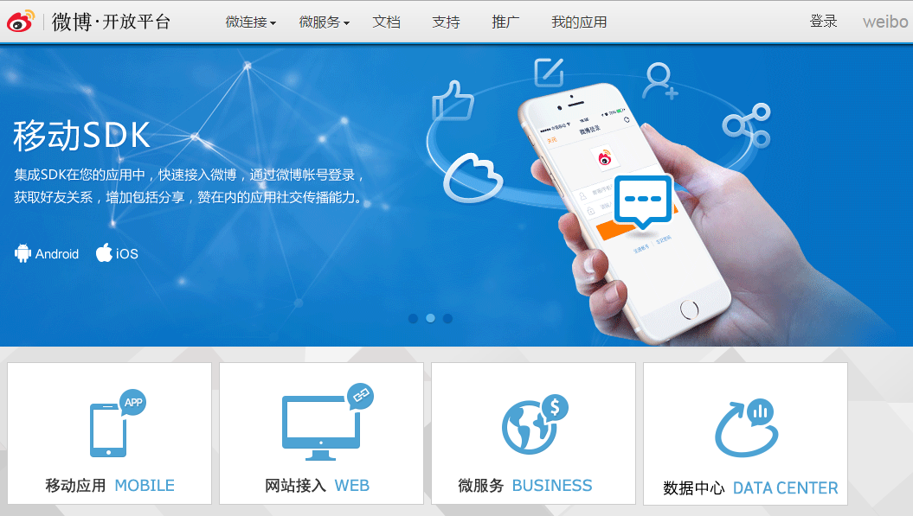
click the 登录(Login) button on the top-right and sign in with your phone number
(add 001 before your number if not works) and password.
Fill in Basic Information
If you successful login, click the Avatar on the top-right of the screen, and then click the
编辑开发者信息(Update Information) which is the first option in the menu that pops.
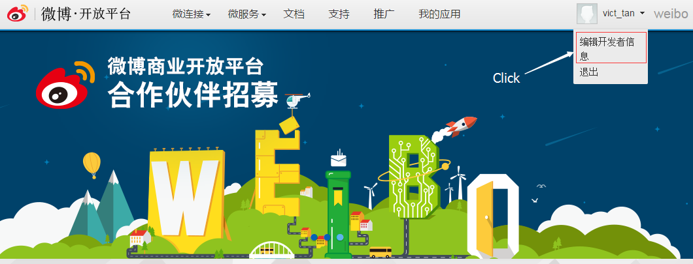
And then, you will go the the basic information pages,it could be like this:
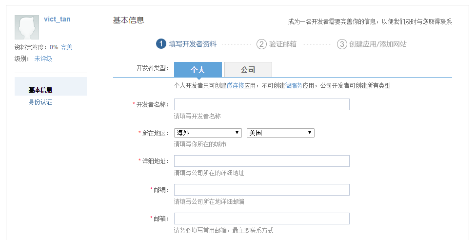
NOTE: You can use your browser like Chrome to translate all the fields to your own comfortable language.
Some of fields are translated to English:
- 开发这类型: Type of account, and '个人' means personal, '公司' means company)
- 开发者名称: Developer's name
- 所在地区: Your location, if you are not in China, just choose 海外(Overseas) and 美国(U.S.)
- 紧急联系人姓名: Emergency contact name
- 紧急联系人电话: Emergency Contact Phone
For the Emergency contact name and Emergency contact phone,
you can simply fill in your own information. After all the fields are finished correctly which will mark on the right of the fields.
Click the blue 确认(OK) button and
you will see a confirmation message with a request to send confirmation email.
then click the blue 确认(OK) button.
On the next page, it will notice whether the confirm email has been sent successful.After five seconds,
you will be redirected to the home page. Now, you need log in to your email account to confirm the information.
Make a Confirmation
Log in your email account and check the email sending from weibo_app@vip.sina.com, the email could like this:
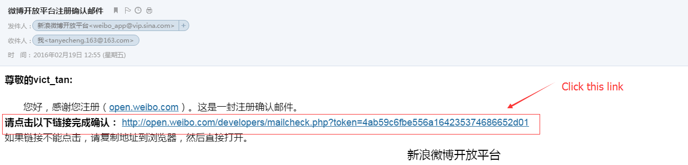
Create a web application
If all the above go smoothly, then click the 微连接(Microjoining) on the menu bar,
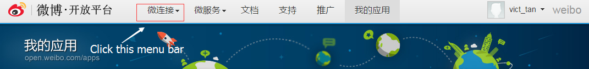
Next, you could see a page with types of applications. What most people would choose 网页应用(Web Application).
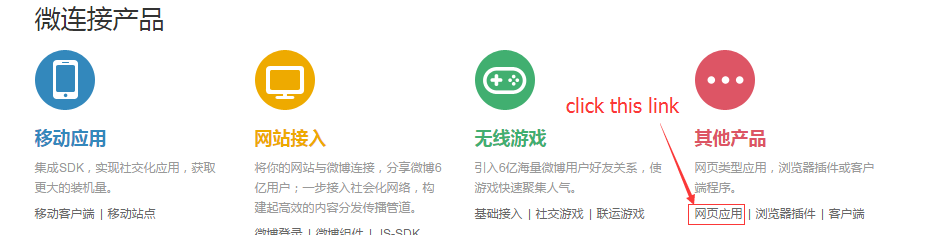
You will need to provide the 应用名称(Application Name) which must be unique in the next page.
When you done,click the 创建(Create) button.
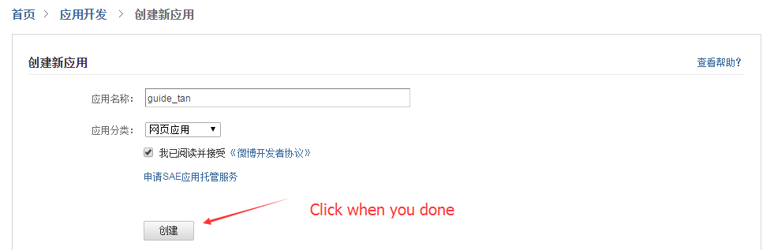
If successful, you will be redirected to the application manager page.
Now, the App Key and App Secret will show on this page.
To set a Redirect URI, just click the 高级信息(Advanced Information)
in the sub-menu.
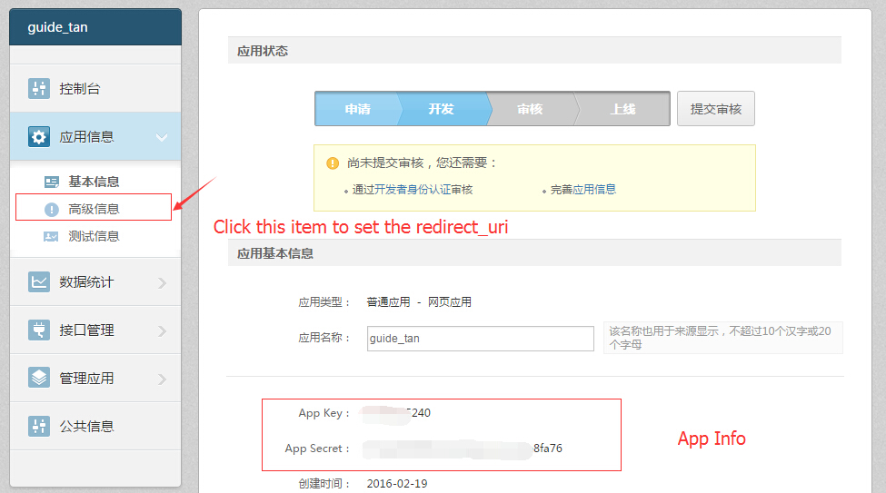
Then, locate a bar starting with the words OAuth2.0 接权设置(OAuth2.0 Authorization Setting), and click the button 编辑(Edit) on the right side of the bar.
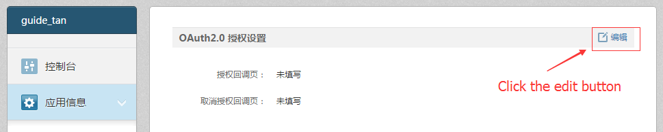
Finally, you should fill the two empty fields with any valid URL address. In most cases, it does not matter what you choose.
Click the green 提交(Submit) button when you done.
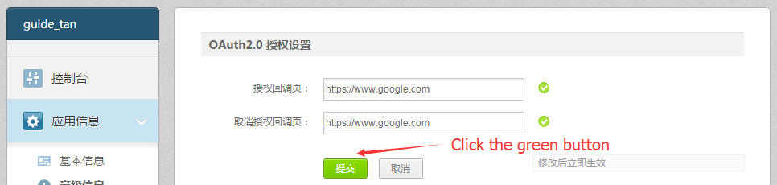
Congratulations! You have finished this section.Now you become a Weibo API programmer since you have the
App Key,
App Secret and
Redirect URI.
Get Access Token
In this section, we need to get an Access Token to use most basic API.
The Weibo API is kind of REST web services. For the details of using API,please refer to the
Weibo API Documents.
There are two steps for the Access Token process, for more details about OAuth2, please go to the
OAuth2 Documents.
Get an Authentication Code
To obtain an authentication code, we could use the
Authorization Service.
For your convenience, just fill in the form below and leave the Response type as the default value.
After correctly completing the information, a new page would be like this:
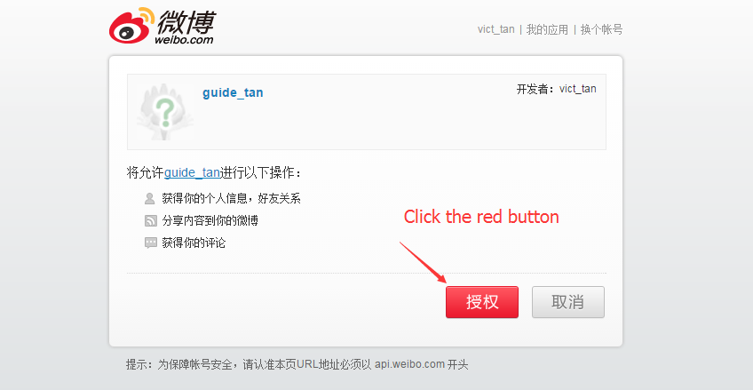
Click the red 授权(Authorize) button,and you will be redirected to the URL you have set.
Copy the code in the URL to go to next step.
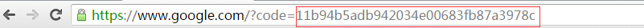
Obtain the Access Token
To complete the final step, we could use the
Access Token Service.
For your convenience, just fill in the form below. The Authentication Code comes from last step, and leave the
Grant Type as the default value.
After correctly completing the information, the service will return a JSON format message in a new page.
{"access_token":"2.00biaj5GctqIhB2da047b0c47yeUcB","remind_in":"157679999","expires_in":157679999,"uid":"5862294965"}
The Access Token above would be 2.00biaj5GctqIhB2da047b0c47yeUcB, it can last for a long time.
Congratulations! You have completed this section. If you are interested in the API demo, please follow the next section.
NOTE: If you get some unexpected errors, please get a new Authentication Code. Try again!
API Examples
In this section, I wish you can understand the following examples.
Public Timeline:
Return the latest public Weibos.
Give your App Key and Access Token, and click the Submit button.
Congratulations! You have completed ALL of the guide. I hope it would be helpful! If you have any questions,
please feel free to contact with Yecheng Tan.
Reference